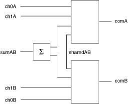

The following figure represents the NI PXIe-2790 in the independent topology.

Call the niSwitch Connect Channels VI or the niSwitch_Connect function to connect channels in this topology. If applicable, you must call the niSwitch Disconnect Channels VI or the niSwitch_Disconnect function to disconnect an existing connection before you call the niSwitch Connect Channels VI or the niSwitch_Connect function.
The initially connected channels on the NI 2790 are sumAB to comA and sumAB to comB. To connect ch1A to comA, disconnect sumAB from comA and connect ch1A to comA. To connect ch1B to comB, disconnect sumAB from comB and connect ch1B to comB. Banks A and B operate independently.